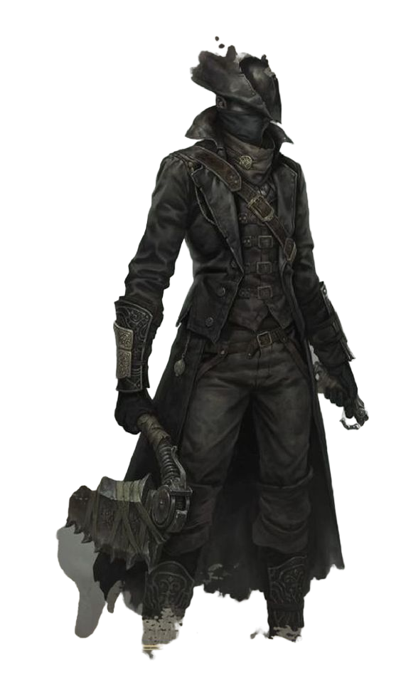
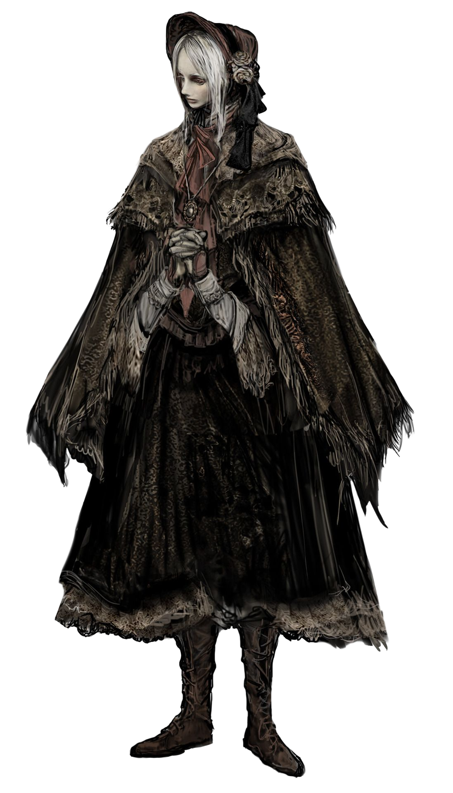
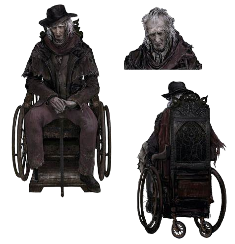
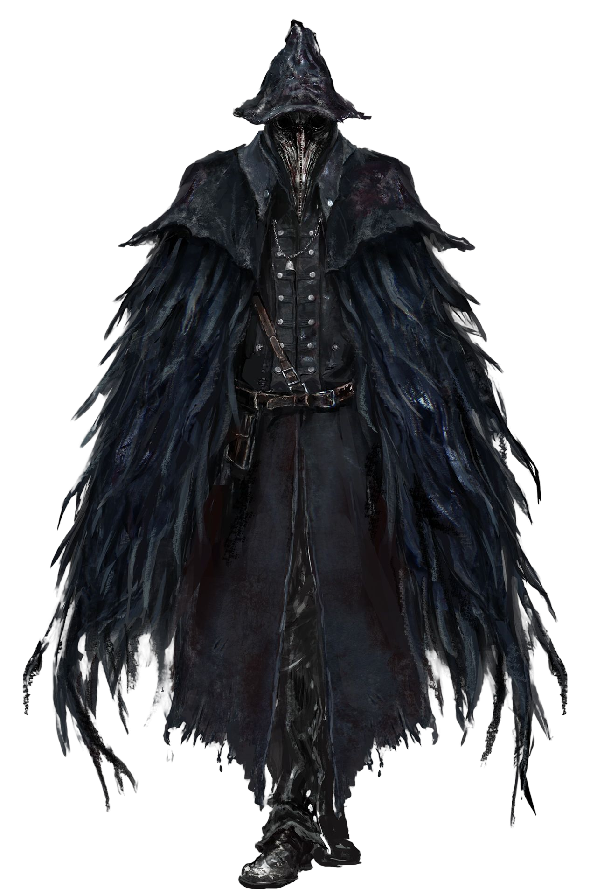
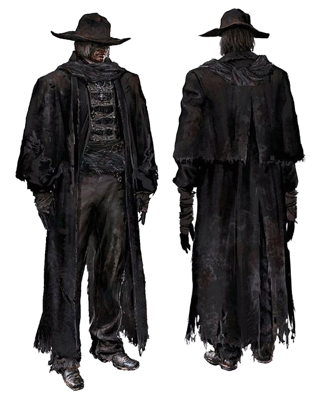
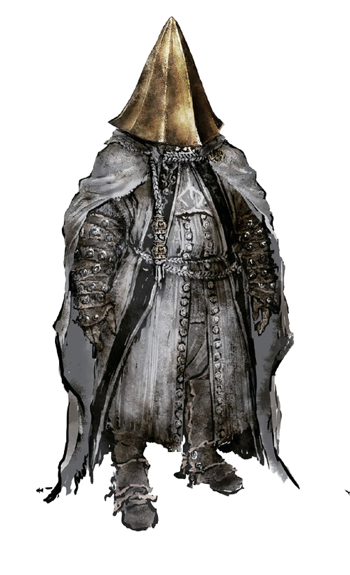
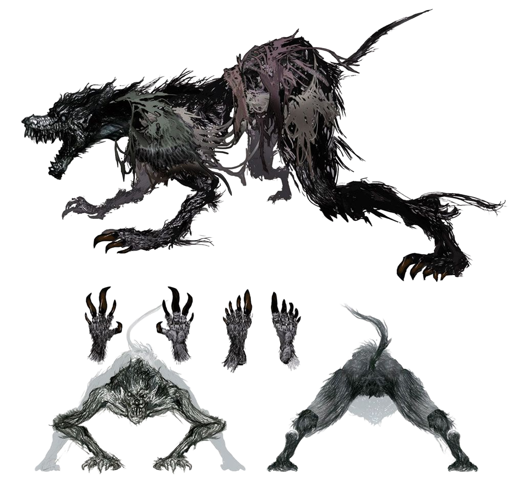
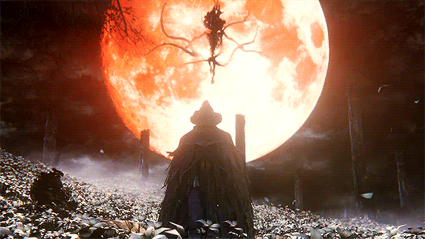
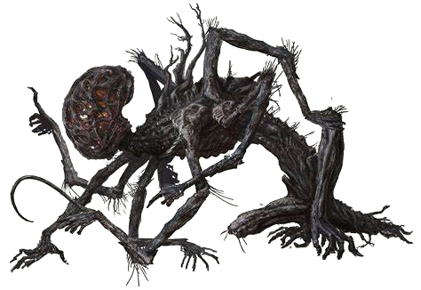
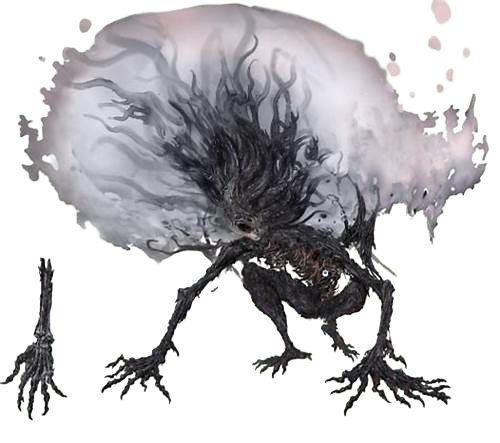

Personagens
O Caçador/A Caçadora
O protagonista da história é chamado de O Caçador, ou A Caçadora, dependendo do gênero do personagem definido pelo jogador.
O Caçador viaja até Yharnam por motivos desconhecidos, porém, hipóteses mostram que ele estaria em busca de uma cura para uma doença desconhecida. Se a cura é para ele ou para outros objetivos, não se sabe.
Ao chegar em Yharnam, um homem misterioso realiza uma transfusão de sangue nele e diz que tudo não passará de um sonho ruim. Após acordar, o protagonista segue agora sozinho em uma cidade infestada de feras em busca de uma resposta para aquela situação.
Em certo momento, o Caçador morre, porém, ele acorda novamente em um local ainda desconhecido para ele. Lá ele conhece a Boneca e Gehrman, que o auxiliam em sua jornada e revelam que aquele local era um sonho e um refúgio seguro para todos os caçadores.
É dito para o Caçador que seu objetivo naquele momento era acordar novamente para caçar mais e mais feras, e que era tudo para seu próprio bem. Ainda sem resposta e alternativas, o caçador se engaja em uma caça implacável a todas as feras na cidade sombria de Yharnam.

A Boneca
Uma boneca sem alma residente do Sonho do Caçador, o propósito da boneca é cuidar de novos caçadores e encoraja-los com o poder dos ecos sanguíneos.
A Boneca foi criação de Gehrman, o primeiro caçador, com intuito de representar sua antiga companheira, e amor de sua vida, Senhora Maria.
Ela cuida de todos os caçadores que passam pelo Sonho do Caçador e os deseja o seu bem. Por mais que ela seja uma boneca, seus sentimentos e inocência são um alívio para todos os caçadores que desejam escapar um pouco do mundo desperto.
Um dia foi um objeto inanimado, porém com a criação do Sonho do Caçador, ela passou a ter uma força vital própria.
A Boneca é muito leal ao Caçador. Ela aceita seu papel para servir, acreditando que era seu propósito. Isso é visto em todos os finais, onde ela serve o Caçador de alguma forma ou deseja bem ao Caçador.

Gehrman, O Primeiro Caçador
Um idoso ligado a uma cadeira de rodas, Gehrman é um personagem misterioso que parece agir como guia do Caçador durante todo o jogo.
No início do doençça das feras, Gehrman foi o primeiro dos Yharnamitas a tomar conhecimento das bestas e tornou-se o primeiro caçador. Seu traje nos diz que, fazendo ajustes em suas roupas e ferramentas cotidianas, Gehrman se equipou para caçar as bestas. Tornou-se um pioneiro conhecido no campo da caça de feras, assumindo a responsabilidade como professor e idealizador de armas.
À medida que a peste se espalhava e mais pessoas se conscientizavam disso, a igreja começou a enviar caçadores especialmente sancionados por conta própria, e até recrutou civis para se juntarem à caçada. Logo, Gehrman e sua oficina se tornaram invalidados quando a igreja montou uma oficina própria. Algum tempo depois que sua companheira de caça, Senhora Maria desapareceu. Gehrman, em sua dor, invocou um Eminente, uma criatura grandiosa e misteriosa, para ajudá-lo a dar vida à Boneca, e com sua ajuda através de um contrato criou o Sonho do Caçador
Eileen, O Corvo
Eileen é uma caçadora cujo dever juramentado é se livrar de outros caçadores que foram corrompidos por sua sede por sangue.
Eileen é um membro da aliança dos Caçadores de Caçadores, e continua uma longa tradição de dar aos mortos um enterro no céu em vez de selá-los dentro de caixões, ato que ela considera blasfêmia. Apesar de sua idade, ela ainda continua sua tarefa de caçar caçadores que enlouqueceram com a caça das feras e a faz de forma bastante eficaz.
Independentemente disso, Eileen é uma pessoa equilibrada e carinhosa, muitas vezes expressando grande empatia e preocupação maternal com o Caçador. Ela usa um conjunto de penas de corvo, e empunha a Lâmina da Misericórdia ao lado da popular pistola de caçador.
Eileen no final de sua vida pode ser encontrada fora da Grande Catedral de Yharnam, terrivelmente ferida. Ela garante que finalmente admite que a caçada é demais para ela e passa ao Caçado seu distintivo de caçador de caçadores.

Padre Gascoigne
Padre Gascoigne é um caçador experiente que sucumbiu à embriaguez sanguínea da caçada e, como tal, desceu para uma onda frenética e bestial, assim se transformando em uma fera no final de sua vida.
Gascoigne era padre em uma terra estrangeira, onde ganhou o título de "pai". Em algum momento de sua vida, Gascoigne viajou para Yharnam e eventualmente se juntou à Igreja da Cura como um caçador. Ao ingressar na Igreja como caçador, Gascoigne foi parceiro de Henryk, um caçador mais velho. Os dois fizeram uma dupla eficaz, e sua eficácia levou à longa vida "trágica" de Henryk.
Em algum momento, padre Gascoigne se casou com uma mulher com o nome de Viola e o casal teve duas filhas. Enquanto Gascoigne continuava a caçar, ele começou a ser afetado pela sede de sangue, esquecendo pouco a pouco de sua família. Sua esposa, Viola era conhecida por tocar uma pequena caixa de música, uma lembrança deles, a fim de atraí-lo para casa quando ele tinha saído a noite toda e fazê-lo lembrar dela e de seus filhos quando ele começou a sucumbir à sede de sangue.

Alfred, O Caçador de Sanguevis
Alfred é um membro dos carrascos de Logarius. Os Carrascos são uma divisória da Igreja da Cura com o objetivo de acabar completamente com os sanguevis de Cainhurst.
Bom humor e otimismo em meio ao caos é um traço forte de sua personalidade. Ele cria um forte amizade com o Caçador e oferece diversas informações úteis ao longo da história.
O Caçador e Alfred sempre se ajudam na caça quando necessário e possível, assim aliviando nem que um pouco o peso da responsabilidade de caçar feras.
Alfred recebe a ajuda do Caçador para acabar com os sanguevis, porém, após concluir seu objetivo, Alfred enlouquece com a caçada e desaparece misteriosamente, sendo encontrado tempos depois desolado com o fim de seu propósito.
Feras
Antigas Feras são geralmente caracterizadas como sendo criaturas peludas, semelhantes a lobisomens ou criaturas que foram totalmente transformadas pela praga das feras. Quase todos são suscetíveis a danos causados pelo fogo.
Eminentes
Os Eminentes são um grupo de seres multidimensionais extremamente poderosos que podem existir em vários planos de existência. Eles têm sido muitas vezes descritos como deuses, e desempenham um papel misterioso, mas crucial na trama do jogo, bem como em sua história geral.
 